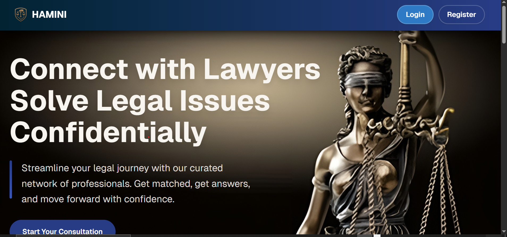
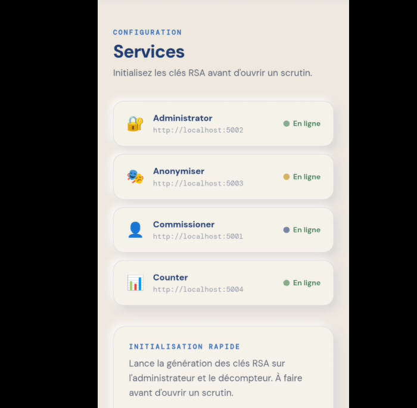
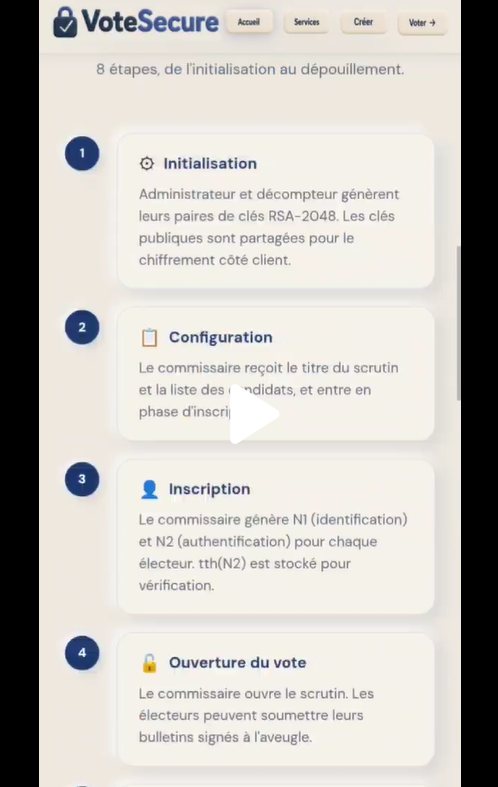

Programming
- C
- Java
- Python
- JavaScript
SYSTEM SECURITY ENGINEERING STUDENT
Fourth-year engineering student at ENSTA, interested in cybersecurity, cryptography, secure systems and learning technologies beyond my main field.
01 / ABOUT
I am a fourth-year engineering student at the National Higher School of Advanced Technologies (ENSTA), specializing in System Security.
I am particularly interested in cybersecurity and cryptography, especially the mathematical foundations behind secure systems such as RSA and modular arithmetic.
I also enjoy exploring subjects outside my main formation. My curiosity has led me to technologies such as Arduino, sensors and embedded systems, because I like understanding how different technical fields connect.
02 / SKILLS
03 / PROJECTS

A web application designed to help users find lawyers. I designed the complete website interface and user experience in Figma, using external websites for visual inspiration and imagery. The frontend team then implemented the design using HTML, CSS and JavaScript.


A secure electronic voting system developed in Python. I implemented the RSA cryptographic functionality, including encryption and decryption, as part of a system involving five entities, including the commissioner.
A data analysis project based on the Titanic dataset. I analyzed passenger survival data and developed a Streamlit dashboard to explore and present the results.
04 / EXPERIENCE
During my discovery internship at Sonatrach, I explored a professional technical environment and learned about information systems and infrastructure.
I discovered the role of the data center and observed infrastructure including servers, virtualization, cooling systems, generators and UPS equipment. This experience gave me a practical view of how technical infrastructure is organized and maintained in an organization.
05 / EDUCATION
State Engineering Degree in System Security
Fourth-year engineering student developing skills across programming, databases, cybersecurity, cryptography and web technologies.
06 / CONTACT
I am always interested in learning, building and discussing technology, cybersecurity and new ideas.